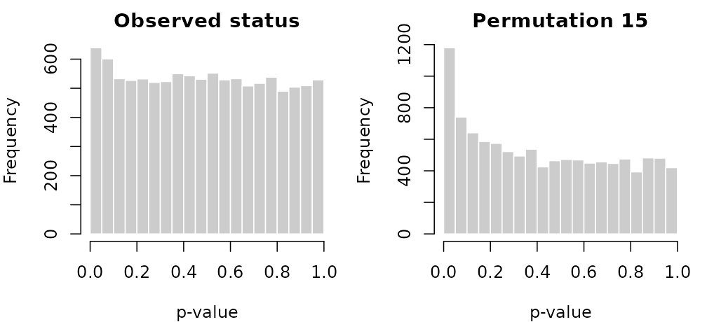
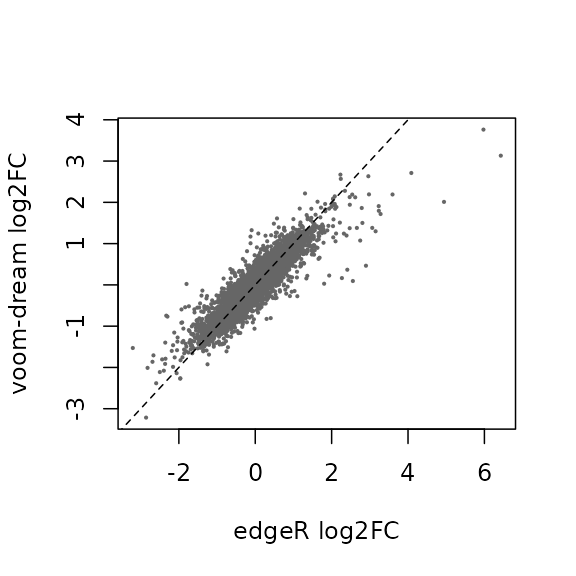

Checking a result: permutations, backends and power
Cuiwei Gao
26 November 2026
Source:vignettes/permutation-and-power.Rmd
permutation-and-power.RmdAbstract
Four checks of an association analysis with exposomeSC, run on the airway data of the package: what the analysis returns when the exposure is permuted among the donors, how far two backends agree, what the two adjustments of the p-values count, and how many donors a study needs. The vignette reports what these checks give on 12 donors. It makes no general statement about the calibration or the power of the methods.
Introduction
A table of p-values says little about how far it can be trusted. This vignette goes through four checks that exposomeSC makes easy, on the example data of the package: airway epithelial cells of six heavy smokers and six never smokers from the Human Lung Cell Atlas, which the main vignette describes. The first two are run on basal cells only, to keep the vignette short.
With 12 donors the checks cannot settle anything about the methods. They show how each check is done and what it can and cannot tell.
Installation
if (!requireNamespace("BiocManager", quietly = TRUE)) {
install.packages("BiocManager")
}
BiocManager::install("exposomeSC")The observed result
library(exposomeSC)
library(SingleCellExperiment)
x <- readRDS(system.file("extdata", "hlca_airway_subset.rds",
package = "exposomeSC"))
observed <- run_sc_exwas(x, exposure = "smoking", covariates = "chemistry_v3",
celltypes = "Basal")
summarise <- function(fit) {
data.frame(tests = nrow(fit), calls = sum(fit$padj_global < 0.05),
p_below_0.05 = round(mean(fit$pvalue < 0.05), 3))
}
summarise(observed)
#> tests calls p_below_0.05
#> 1 10708 2 0.06A call is a gene with padj_global below 0.05. With one
cell type in the run, padj_global is the Benjamini-Hochberg
adjustment over the genes tested in basal cells.
Permuting the exposure among the donors
A permutation shuffles the smoking statuses among the donors and leaves the counts and the covariates as they are. If smoking had no part in the counts, the observed labelling would be one of many that were equally likely, and the analysis of a shuffled labelling shows what the pipeline returns on these counts in that case. A single shuffled labelling is not unrelated to the observed one, though: some donors keep their own status, and a difference between smokers and never smokers passes in part into the shuffled comparison.
The model adjusts for the 10x chemistry, and the status is permuted within each chemistry, so that the two chemistries keep their numbers of smokers:
design <- exposureData(x)
table(smoking = design[, "smoking"], chemistry_v3 = design[, "chemistry_v3"])
#> chemistry_v3
#> smoking 0 1
#> 0 2 4
#> 1 2 4
choose(4, 2) * choose(8, 4)
#> [1] 420There are 420 ways to label two of the four donors of one chemistry and four of the eight donors of the other as smokers; the observed labelling is one of them. A labelling and its mirror image, with every status reversed, give the same tests, so these are 210 different analyses. Twenty labellings are drawn here, each with a seed of its own.
permute_within <- function(values, strata) {
for (level in unique(strata)) {
rows <- which(strata == level)
values[rows] <- values[rows][sample.int(length(rows))]
}
values
}
permuted_fit <- function(seed) {
set.seed(seed)
labels <- design
labels[, "smoking"] <- permute_within(design[, "smoking"],
design[, "chemistry_v3"])
permuted <- x
exposureData(permuted) <- labels
fit <- run_sc_exwas(permuted, exposure = "smoking",
covariates = "chemistry_v3", celltypes = "Basal")
metadata(fit)$status <- labels[, "smoking"]
fit
}
fits <- lapply(1:20, permuted_fit)
permutations <- do.call(rbind, lapply(fits, function(fit) {
same_label <- sum(metadata(fit)$status == design[, "smoking"])
cbind(same_label = same_label, summarise(fit))
}))
permutations
#> same_label tests calls p_below_0.05
#> 1 8 10708 0 0.053
#> 2 4 10708 0 0.044
#> 3 6 10708 0 0.038
#> 4 8 10708 0 0.038
#> 5 4 10708 0 0.036
#> 6 8 10708 0 0.047
#> 7 6 10708 0 0.044
#> 8 6 10708 0 0.039
#> 9 8 10708 0 0.042
#> 10 4 10708 0 0.036
#> 11 6 10708 0 0.054
#> 12 2 10708 0 0.046
#> 13 6 10708 0 0.034
#> 14 8 10708 0 0.042
#> 15 4 10708 19 0.110
#> 16 6 10708 0 0.039
#> 17 6 10708 0 0.035
#> 18 4 10708 0 0.061
#> 19 4 10708 0 0.046
#> 20 6 10708 1 0.051
statuses <- t(vapply(fits, function(fit) metadata(fit)$status, numeric(12)))
mirrored <- statuses[, 1] == 0
statuses[mirrored, ] <- 1 - statuses[mirrored, ]
nrow(unique(statuses))
#> [1] 20same_label is the number of donors whose permuted status
is their own; the observed labelling would have 12 and its mirror image
0, and 0 of the twenty have either. The last number counts the different
analyses among the twenty, a labelling and its mirror image taken as
one: drawn each on its own, two could have been the same. In 2 of the 20
permutations at least one gene was called, and the fraction of p-values
below 0.05 lay between 0.034 and 0.11, with a mean of 0.047; for the
observed status it is 0.06.
most <- which.max(permutations$calls)
old <- par(mfrow = c(1, 2), mar = c(4, 4, 2, 1))
hist(observed$pvalue, breaks = 20, main = "Observed status",
xlab = "p-value", col = "grey80", border = "white")
hist(fits[[most]]$pvalue, breaks = 20, main = paste("Permutation", most),
xlab = "p-value", col = "grey80", border = "white")
P-values of the genes tested in basal cells, for the observed smoking status and for the permutation with the most calls.
par(old)Calls under a permuted status come together
The permutation with the most calls is worth a look:
called <- fits[[most]]$gene[fits[[most]]$padj_global < 0.05]
called <- sort(rowData(x)[called, "symbol"])
called
#> [1] "ARL4D" "BIRC5" "CDC20" "CENPX" "CHL1" "CYP26A1" "CYP4B1"
#> [8] "DKK1" "FOXD1" "H2AC6" "H2AZ1" "MCM3" "MCM4" "MCM5"
#> [15] "RANBP1" "SCPEP1" "TUBA1B" "TUBB" "TYMS"
replication <- c("BIRC5", "CDC20", "MCM3", "MCM4", "MCM5", "TYMS")The list was read after it was printed. Among its 19 genes are 6 genes of DNA replication and mitosis: BIRC5, CDC20, MCM3, MCM4, MCM5 and TYMS. Genes like these are expressed together in dividing cells, so they rise and fall together from donor to donor, and one difference between two groups of donors can bring many of them below the threshold at once. MKI67 and TOP2A are two usual markers of dividing cells. The next lines say whether they were tested and whether either was called, and count, for each donor, the sampled basal cells with a count of either. A count of the called genes themselves would only say the calls again.
markers <- rownames(x)[rowData(x)$symbol %in% c("MKI67", "TOP2A")]
markers %in% fits[[most]]$gene
#> [1] TRUE TRUE
intersect(c("MKI67", "TOP2A"), called)
#> character(0)
basal_cells <- x[, x$cell_type == "Basal"]
with_marker <- Matrix::colSums(counts(basal_cells)[markers, ] > 0) > 0
status <- metadata(fits[[most]])$status
names(status) <- rownames(design)
by_donor <- tapply(with_marker, basal_cells$donor_id, sum)
data.frame(permuted_status = status[names(by_donor)],
observed_status = design[names(by_donor), "smoking"],
cells_with_marker = as.vector(by_donor),
cells = as.vector(table(basal_cells$donor_id)[names(by_donor)]),
row.names = names(by_donor))
#> permuted_status observed_status cells_with_marker cells
#> T101 0 1 4 10
#> T120 0 1 4 10
#> T126 1 0 1 10
#> T137 0 0 4 10
#> T153 1 0 1 10
#> T154 0 1 4 10
#> T164 0 0 6 10
#> T165 1 0 4 10
#> T166 1 0 2 10
#> T167 0 1 4 10
#> T85 1 1 1 10
#> T90 1 1 1 10
by_status <- tapply(by_donor, status[names(by_donor)], sum)
by_status
#> 0 1
#> 26 10Of the sampled basal cells of the donors with permuted status 0, 26 have a count of one of the two genes, against 10 of the cells of the donors with status 1. A call under a shuffled status is no evidence of an effect of smoking. It need not be noise, though: a shuffled status can happen to divide the donors by something that does differ between them, as the share of dividing cells among the ten cells sampled from each donor may here. The model then finds a difference that is there, and what would be wrong is to read it as an effect of the status.
What the check shows
- In 18 of the 20 permuted labellings the pipeline calls nothing, and between 0.034 and 0.061 of their p-values are below 0.05. A test that called many genes for most labellings would be suspect; that is the failure this check can find.
- Calls come together, because genes are correlated. The number of calls in one labelling therefore says little, and the number of labellings with any call is the better summary.
- Twenty labellings of 420 do not estimate an error rate, and 420
would not either: the labellings overlap with the observed one
(
same_label), and they are few. - The check assumes that donors could have had each other’s status. For an exposure that was not assigned at random this does not hold. Smokers and never smokers differ in more than smoking, and a permutation removes those differences from the comparison along with the exposure.
Two backends on the same data
method = "voom_dream" fits another model to the same
pseudobulk counts. Agreement between backends does not show that either
is right; it shows how much of a result depends on the choice.
voom <- run_sc_exwas(x, exposure = "smoking", covariates = "chemistry_v3",
method = "voom_dream", celltypes = "Basal")
common <- intersect(observed$gene, voom$gene)
c(edgeR = nrow(observed), voom_dream = nrow(voom), both = length(common))
#> edgeR voom_dream both
#> 10708 13806 10708
edger_common <- observed[match(common, observed$gene), ]
voom_common <- voom[match(common, voom$gene), ]
cor(edger_common$log2FC, voom_common$log2FC)
#> [1] 0.919441
table(edgeR = edger_common$padj_global < 0.05,
voom_dream = voom_common$padj_global < 0.05)
#> voom_dream
#> edgeR FALSE TRUE
#> FALSE 10706 0
#> TRUE 1 1The backends do not test the same genes, because each has its own
expression filter, so their padj_global values are adjusted
over families of different sizes. The estimates of the genes that both
test are strongly correlated but not equal, as the figure shows; the
calls, which sit at the edge of a threshold, need not agree.
plot(edger_common$log2FC, voom_common$log2FC, pch = 16, cex = 0.4,
col = "grey40", xlab = "edgeR log2FC", ylab = "voom-dream log2FC")
abline(0, 1, lty = 2)
Log2 fold changes of the genes tested by both backends in basal cells.
Two adjustments of the p-values
run_sc_exwas() returns padj, adjusted
within each cell type, and padj_global, adjusted once over
all tested genes and cell types.
full <- run_sc_exwas(x, exposure = "smoking", covariates = "chemistry_v3")
table(celltype = full$celltype, padj = full$padj < 0.05,
padj_global = full$padj_global < 0.05)
#> , , padj_global = FALSE
#>
#> padj
#> celltype FALSE TRUE
#> Basal 10706 0
#> Multiciliated lineage 11130 5
#> Secretory 11042 0
#>
#> , , padj_global = TRUE
#>
#> padj
#> celltype FALSE TRUE
#> Basal 0 2
#> Multiciliated lineage 0 4
#> Secretory 1 0The two are answers to different questions. padj
controls the false discovery rate among the calls of one cell type,
taken alone. padj_global controls it among all calls of the
analysis, which is what a list of calls across cell types needs. Neither
is uniformly the stricter one: a gene can pass the threshold of the
larger family without passing that of its own cell type, when other cell
types contribute many small p-values.
How many donors
estimate_power() approximates the power of a pseudobulk
test for one gene in one cell type at a Bonferroni level for the number
of tests, from the number of donors, the log2 fold change per unit of
the exposure, the standard deviation of the exposure, the dispersion and
the mean pseudobulk count. It treats the dispersion as known and is
optimistic for small numbers of donors. The Bonferroni level is stricter
than the Benjamini-Hochberg adjustment behind padj_global,
so the table is not the power to be called in the analysis above.
The effect is per unit of the exposure, so the spread of the exposure
matters as much as the size of the effect. A status that half of the
donors have, as the smoking status here, has a standard deviation of
0.5; the default of exposure_sd is 1, which suits an
exposure that was standardised. The call asks for the power to find a
doubling of expression between two groups of equal size
(effect_size = 1) at the Bonferroni level for as many tests
as the analysis above made:
estimate_power(n_donors = c(12, 24, 48, 96), effect_size = 1,
exposure_sd = 0.5, n_genes = nrow(full), n_celltypes = 1,
dispersion = 0.1, base_mean = 100)
#> DataFrame with 4 rows and 8 columns
#> n_donors power effect_size exposure_sd n_tests alpha_adjusted
#> <numeric> <numeric> <numeric> <numeric> <numeric> <numeric>
#> 1 12 0.117276 1 0.5 32890 1.52022e-06
#> 2 24 0.621975 1 0.5 32890 1.52022e-06
#> 3 48 0.992474 1 0.5 32890 1.52022e-06
#> 4 96 1.000000 1 0.5 32890 1.52022e-06
#> dispersion base_mean
#> <numeric> <numeric>
#> 1 0.1 100
#> 2 0.1 100
#> 3 0.1 100
#> 4 0.1 100n_genes times n_celltypes is the number of
tests; here all tests of the three cell types are given as one
number.
Donors, not cells, are the units: more cells per donor raise the
pseudobulk count, which enters through base_mean, but they
do not add to n_donors.
Session information
sessionInfo()
#> R Under development (unstable) (2026-11-25 r90991)
#> Platform: x86_64-pc-linux-gnu
#> Running under: Ubuntu 26.04.1 LTS
#>
#> Matrix products: default
#> BLAS: /usr/lib/x86_64-linux-gnu/openblas-pthread/libblas.so.3
#> LAPACK: /usr/lib/x86_64-linux-gnu/openblas-pthread/libopenblasp-r0.3.32.so; LAPACK version 3.12.0
#>
#> locale:
#> [1] LC_CTYPE=C.UTF-8 LC_NUMERIC=C LC_TIME=C.UTF-8
#> [4] LC_COLLATE=C.UTF-8 LC_MONETARY=C.UTF-8 LC_MESSAGES=C.UTF-8
#> [7] LC_PAPER=C.UTF-8 LC_NAME=C LC_ADDRESS=C
#> [10] LC_TELEPHONE=C LC_MEASUREMENT=C.UTF-8 LC_IDENTIFICATION=C
#>
#> time zone: UTC
#> tzcode source: system (glibc)
#>
#> attached base packages:
#> [1] stats4 stats graphics grDevices utils datasets methods
#> [8] base
#>
#> other attached packages:
#> [1] SingleCellExperiment_1.36.0 SummarizedExperiment_1.44.0
#> [3] Biobase_2.74.0 GenomicRanges_1.66.0
#> [5] Seqinfo_1.4.0 IRanges_2.48.0
#> [7] S4Vectors_0.52.0 BiocGenerics_0.60.0
#> [9] generics_0.1.4 MatrixGenerics_1.26.0
#> [11] matrixStats_1.5.0 exposomeSC_0.99.4
#> [13] BiocStyle_2.42.0
#>
#> loaded via a namespace (and not attached):
#> [1] Rdpack_2.6.6 bitops_1.1-0 rlang_1.3.0
#> [4] magrittr_2.0.5 otel_0.3.0 compiler_4.7.0
#> [7] systemfonts_1.3.4 vctrs_0.7.3 reshape2_1.4.5
#> [10] stringr_1.6.0 pkgconfig_2.0.3 fastmap_1.2.0
#> [13] backports_1.5.1 XVector_0.54.0 caTools_1.18.4
#> [16] rmarkdown_2.32 nloptr_2.2.1 ragg_1.5.2
#> [19] purrr_1.2.2 xfun_0.62 cachem_1.1.0
#> [22] beachmat_2.30.0 jsonlite_2.0.0 EnvStats_3.1.0
#> [25] remaCor_0.0.20 DelayedArray_0.40.0 BiocParallel_1.48.0
#> [28] broom_1.0.13 parallel_4.7.0 R6_2.6.1
#> [31] stringi_1.8.9 bslib_0.12.0 RColorBrewer_1.1-3
#> [34] limma_4.0.0 boot_1.3-32 jquerylib_0.1.4
#> [37] numDeriv_2016.8-1.1 Rcpp_1.1.2 bookdown_0.48
#> [40] iterators_1.0.14 knitr_1.52 Matrix_1.7-6
#> [43] splines_4.7.0 tidyselect_1.2.1 abind_1.4-8
#> [46] yaml_2.3.12 gplots_3.3.0 codetools_0.2-20
#> [49] plyr_1.8.9 lattice_0.23-1 tibble_3.3.1
#> [52] lmerTest_3.2-1 S7_1.0.0 evaluate_1.0.5
#> [55] desc_1.4.3 pillar_1.11.1 BiocManager_1.30.27
#> [58] KernSmooth_2.23-27 reformulas_0.4.4 ggplot2_4.0.4
#> [61] scales_1.4.0 aod_1.3.3 scrapper_1.8.0
#> [64] minqa_1.2.8 gtools_3.9.5 RhpcBLASctl_0.23-42
#> [67] glue_1.8.1 tools_4.7.0 fANCOVA_0.6-1
#> [70] variancePartition_1.44.0 BiocNeighbors_2.8.0 lme4_2.1-0
#> [73] fs_2.1.0 mvtnorm_1.5-0 grid_4.7.0
#> [76] tidyr_1.3.2 rbibutils_2.4.1 edgeR_5.0.0
#> [79] nlme_3.1-172 cli_3.6.6 textshaping_1.1.0
#> [82] S4Arrays_1.14.0 dplyr_1.2.1 corpcor_1.6.10
#> [85] gtable_0.3.6 sass_0.5.0 digest_0.6.39
#> [88] SparseArray_1.13.5 pbkrtest_0.5.5 farver_2.1.2
#> [91] htmltools_0.5.9 pkgdown_2.2.1 lifecycle_1.0.5
#> [94] statmod_1.5.2 MASS_7.3-66